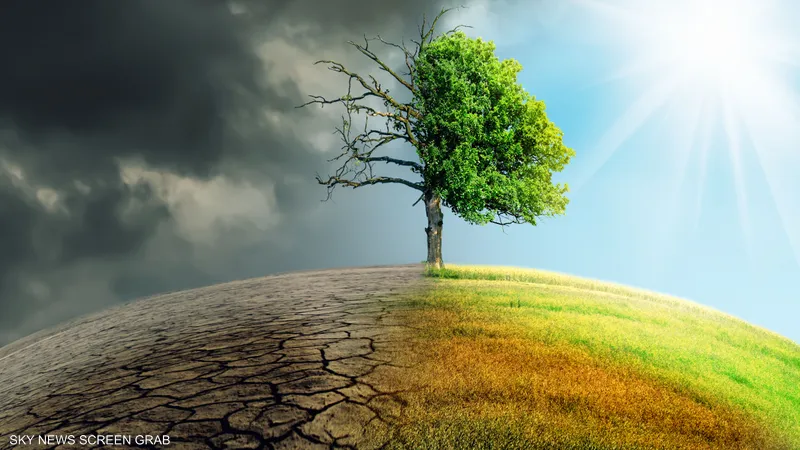

مرحباً بك في موقع
🌍التغير المناخي صوت الأرض
.🖥️✨ هذا الموقع مصمم للعمل على أجهزة الكمبيوتر فقط قد تواجه صعوبة في استخدامه على الهواتف المحمولة⚠️

صوت
الارض
لأجـل حيـاة أفضــل
اعرف المزيد
تواصل معنا
أثر التغير المناخي علي الكائنات الحية
الحلول لمكافحة التغير المناخي
أسباب التغير المناخي
صوت الأرض
الصفحة الرئيسية